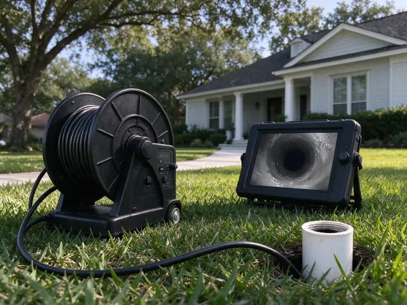

Sewer Cleaning in Knoxville, TN
BGV Plumbing handles sewer cleaning in Knoxville, TN for homes and rentals, with a firm price before the cable goes in.
- Same-Day Sewer Service
- Licensed, Experienced Plumbers
- Cleanup Help After Backups
- Trained Sewer Techs

Sewage Backing Up Into Your Home? Get It Cleared Today in Knoxville, TN.
Roots, grease or wipes, we clear it and tell you how to keep it from coming back.
Sewer Line Cleaning for Knoxville, TN Homes and Rentals
BGV Plumbing clears sewer blockages throughout Knoxville, TN with heavy sectional machines, root saws and jetters. Each tool has its job. Roots need a cutter that saws through the mass, while grease and scale come off best with a jetter that scrubs the whole pipe wall.
Our expertise includes:
- Descaling chains for older cast iron
- Scheduled maintenance for root-prone lines
- Sectional cable machines for 3 to 6 inch mains

Additional Drain Services Services in Knoxville, TN
From stubborn kitchen clogs to main sewer backups, our drain services in Knoxville, TN restore full flow fast and keep it that way.


Customers
Why Choose BGV Plumbing for Sewer Cleaning in Knoxville, TN?
We do not guess about your sewer. Video settles it. With recorded footage you can see if cleaning was enough or if the pipe itself needs work.
- Cleanup Included, We help contain and clean the backup area so your home is livable again quickly.
- Current Equipment, Color cameras and high-pressure jetters let us check the pipe and clean it wall to wall.
- Long-Term Options, We lay out maintenance, spot repair or lining so you can pick what fits your budget.
Citywide Coverage
No part of Knoxville is out of reach. Crews are spread across town. Spreading our techs out through the day keeps drive times short, so even a late afternoon backup can usually be cleared before dinner.
Experienced Team
These techs run main line machines daily and can feel the difference between roots, grease and a collapsed section through the cable. There is less guessing. Knowing what they hit means they fix the cause on the first trip, not just the symptom.
Safety-First Approach
Cleanouts and sewer repairs follow local plumbing code. We pull them as needed. Any repair that requires a permit gets one, along with the inspection your city requires.
Trusted Certified Knoxville Plumbing Services Professionals
At BGV Plumbing, we are proud to offer certified plumbing services throughout Knoxville, TN. Those papers on the wall mean something. Every repair, install and maintenance visit follows strict safety and quality rules, and the plumbers doing the work carry recognized industry credentials.
Call Us Now PHCC Plumbing Contractor Recognition
PHCC Plumbing Contractor Recognition Better Business Bureau (BBB) Accreditation
Better Business Bureau (BBB) Accreditation Angi Certified Pro
Angi Certified Pro ISO 9001 Quality Management Certification
ISO 9001 Quality Management CertificationMain Line and Sewer Clearing in Knoxville, TN
Emergency Sewer Cleaning in Knoxville
Sewage on the floor cannot wait. Our phones are answered after hours. A tech arrives with a main line machine, protective gear and a wet vac, ready to clear roots or a collapsed section and stop the backup before it spreads into more rooms.

Root Removal From Sewer Lines in Knoxville
Trees send roots toward any moisture they can find. A sewer joint is a steady source. We use a sectional cable with a root saw sized to the pipe to cut the mass free and pull it out, then follow with a jetter if fine root hairs are left behind, and a camera shows where roots are entering so you can choose between lining and repair.
Sewer Cleaning Versus Sewer Repair in Knoxville, TN
Cleaning cannot fix a broken pipe. A crack stays a crack. If your sewer backs up every few months, the camera usually shows a belly, a crack or a collapsed section, and we compare the yearly cost of cleanings to a spot repair, a liner or a replacement, with the numbers in writing.
Cast Iron Sewer Cleaning in Knoxville, TN
Cast iron rots from the inside. Homes built in the 1980s and early 1990s may have polybutylene supply lines, which have a history of failure and are a common repipe target. The bottom of the pipe wears first. Because a heavy cutter can punch through weak iron, we use chain descalers and a lower-pressure jet, then check the wall thickness on camera.
Jetting a Sewer Line in Knoxville, TN
Grease and scale are jetting work. A cable only scratches them. A jetter nozzle with rear-facing jets pulls itself down the line and blasts the buildup off the pipe wall, restoring close to the full diameter of the pipe and slowing the next clog.
Clogged Main Sewer Line Solutions in Knoxville, TN
Several drains backing up at once is a main line problem. One pipe, many fixtures. After the line is open, a camera run tells us if the blockage was debris or something structural that will keep catching waste.
Residential Sewer Cleaning in Knoxville
Household sewers clog slowly. Grease, hair and wipes build up over months. Debris catches at a rough joint or a sag, and every load of laundry adds to it until the line closes, and we clear it with a sectional cable or a small jetter sized for the pipe.

Root Masses in Knoxville Sewer Laterals
Mature trees and old clay laterals do not mix. Clay joints let roots in. We cut roots in several passes, then look on camera to judge the damage and talk about lining or a spot repair.
Local Sewer Cleaning Near Me in Knoxville, TN
Soil, tree types and pipe materials vary by neighborhood. Each area has its quirks. We know which parts of town have older clay laterals and which have newer PVC, and that knowledge helps us work faster and suggest the right long-term fix for your line.
A local sewer company knows the local pipe. Some streets still have clay. Knowing which neighborhoods were built with clay laterals and which have newer PVC tells us whether to load the root saw or the jetter before we ever pull up.
BGV Plumbing at a Glance
- Licensed and insured plumbers serving Knoxville, TN
- Same-day appointments and 24/7 emergency response
- Upfront, flat-rate pricing before work begins
- 4.9-star rated by 932+ Tennessee customers
Knoxville Map
Knoxville Information
- Population
- 198,162
- Area codes
- 865/423/931
- Service area
- Knoxville and communities within 40 miles
- Nearby
- Morristown, Cleveland, Kingsport, Johnson City
Roots are the most common reason a main sewer stops in Knoxville, TN, and a line cleaned on a schedule rarely backs up without warning. Rapid swings between mild and freezing weather in Knoxville can loosen joints and fittings over time as pipes expand and contract.
Expert Services
Call BGV Plumbing for honest, reliable plumbing from people who know the trade in Knoxville, TN.
Our Specialized Plumbing Services in Knoxville, TN
At BGV Plumbing, you get every kind of plumbing service from one company across Knoxville, TN. From leak detection to full system installs, our team works fast and charges fair prices on homes and commercial properties alike. Explore our core services below:


How It Goes When We Clean a Sewer in Knoxville, TN
Here is how a sewer call goes with BGV Plumbing in Knoxville, TN, from the phone to the final camera pass.
Call or Book
Call BGV Plumbing at (615) 518-0893 and tell us which drains are backing up. We ask when it started and which fixtures are affected.
Find the Blockage
Your tech locates the cleanout and checks the line. On repeat backups, the camera goes in first.
Clear the Main
We cable or jet the line, depending on the cause. Roots and buildup come out until water runs freely.
Frequently Asked Questions About Sewer Cleaning in Knoxville
Sewer cleaning in Knoxville, TN runs from about $200 to $600 or more. Access matters most. A minor clog cleared with a cable from a good cleanout sits at the low end, while heavy roots or a jetting job on a long line land near the top, and the price is quoted before work starts.
Rental augers often lack the power and cutters to clear roots. They also get stuck. With a professional you get the right head and a camera, so you know what is in the pipe and whether it will clog again.
Drain cleaning covers branch lines. Sewer cleaning covers the main. Branch lines run from a single sink or tub, while the main sewer collects everything in the house and carries it to the city system or septic tank, so a main clog affects every fixture.
Then we show you on camera. Cleaning cannot fix a crack. You get a clear assessment and a range of repair options, including trenchless methods if they apply.
Usually not. Routine cleaning is maintenance. Standard policies rarely pay for cleaning or for damage from gradual wear, though a sudden backup may be covered if you carry a sewer backup rider on your policy.
One to three hours, most of the time. Heavy blockages take longer. A badly rooted or broken line can take longer and may need jetting or a camera inspection on top of cabling.
Several drains backing up at once. It is the number one clue. Gurgling toilets, sewer odors inside and a soggy spot in the yard near the sewer line also point to a main that is blocked or starting to close.
Most take 1 to 2 hours. Some take longer. Thick root growth, a very long lateral or no outside access can push it past two hours.
What People Are Saying About Our Plumbing Experts?

Jessica T.
We were adding a gas range in a kitchen remodel and needed a new line run from the meter. The plumber pulled the permit, ran the pipe through the crawl space, and had it inspected and approved within the week.
Gas Line Repair · Knoxville, TNSofia M.
Two new toilets went in during one visit. The tech set them on new wax rings and swapped the old supply lines. He also noticed our bathroom faucet dripping and replaced the cartridge while he was there. No mess left behind.
Toilet Installation · Knoxville, TN
Nathan E.
Our tankless heater kept throwing an error code and shutting off mid shower. The tech flushed the heat exchanger, which was full of scale, and replaced a bad flow sensor. Hot water has been steady for half a year now.
Water Heater Repair · Bristol, TNMonica A.
Our water bill nearly doubled in one month with no change in how we used water. The tech checked the meter, heard the leak under the hallway with his equipment, and opened a hole about a foot square. Fixed the same day.
Slab Leak Repair · Morristown, TNLaura S.
Our 40 gallon tank started leaking from the bottom after thirteen years. The tech hauled the old one out, set a new unit with a fresh expansion tank, and had hot water running in about four hours. He took the old tank with him too.
Water Heater Replacement · Kingsport, TN
Mark T.
The floor drain in our office break room backed up every few weeks. The plumber ran a cable, then put a camera down and found roots at a joint about thirty feet out. Seeing it on the screen made the decision easy.
Drain Cleaning · Knoxville, TN